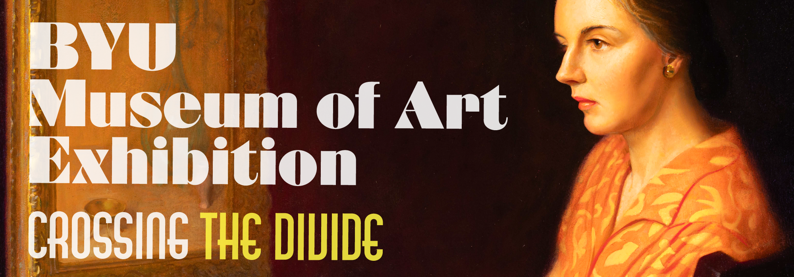
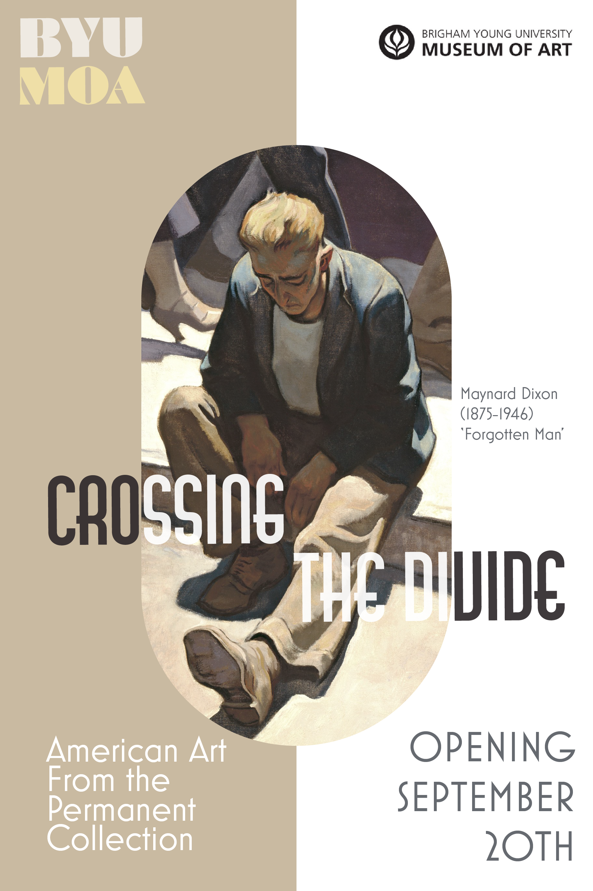
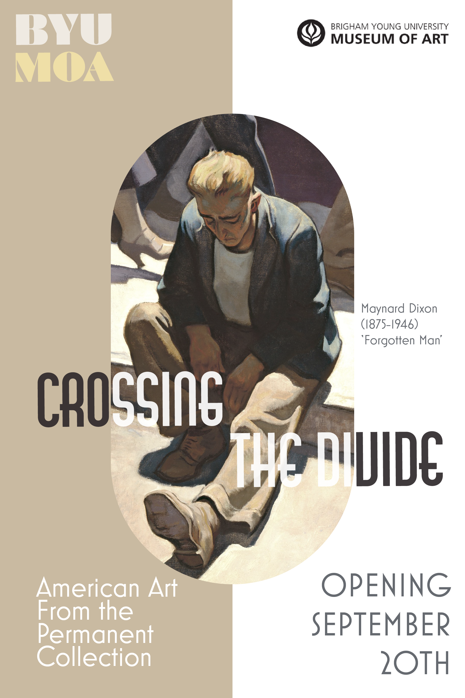
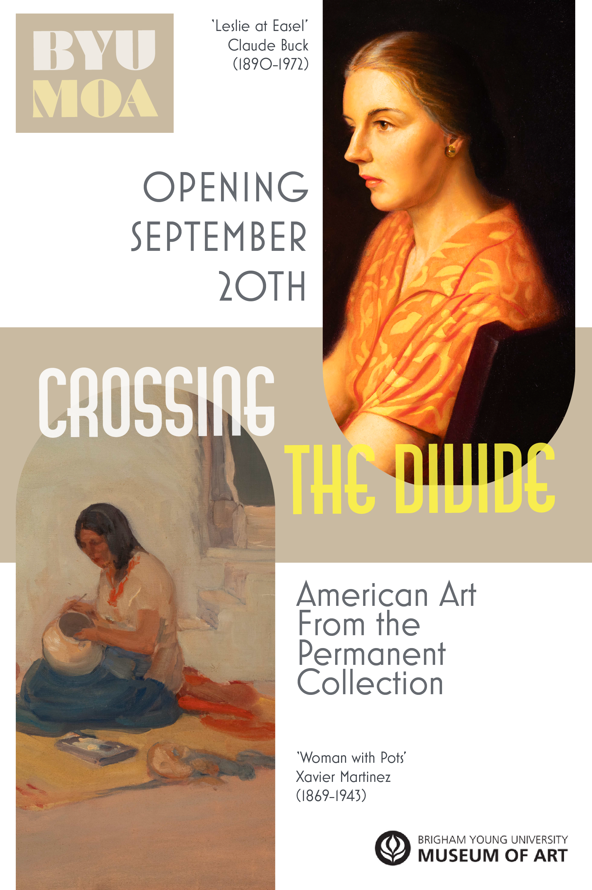
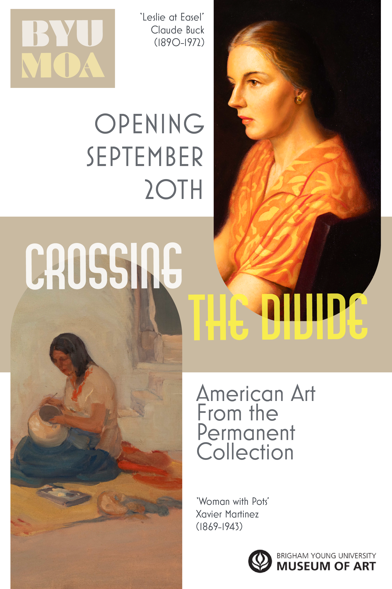

BYU Museum of Art Exhibition Posters
"Crossing the Divide" is a exhibition coming to BYU Art Museum. I have designed multiple posters to advertise this exhibition.
Components
Posters
Mockups
Tools
Adobe Photoshop
Adobe InDesign
As explained by the museum, "This new exhibition celebrates and reexamines the wondrous breadth and depth of American art in the Museum's permanent collection. Over the next five years, visitors will find familiar favorites from artists like Maynard Dixon, Minerva Teichert, and Mahonri Young, as well as rarely shown marvels by artists such as Benny Andrews, Valentina Sireech, and Xavier Tizoc Martinez." You can read more about it here

 


 
